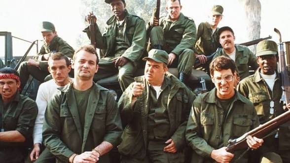

🪖 🫡 STRIPES (1981) — CERTIFIED MGC XF-44

🎬 MGC LOWER COURT OF INQUEST
- ASSET TITLE: Stripes (1981) – The Urban Assault Comedic Planchet
- OFFICIAL REGISTRY GRADE: Certified MGC XF-44 (Extremely Fine / Peak Performance Luster)
- LOWER COURT JURISDICTION: Judge Tina, Chief of Cult Classics
- CASE FILE: #051
📜 THE FORENSIC NARRATIVE BREAKDOWN & RECOVERY
Tina steps onto the active basic training tarmac, adjusts her strict forensic lens, and runs a comprehensive metallurgical audit on this 1981 military comedy staple.
1. High-Velocity Comedic Luster & The First-Act Platoon Strike
- Under close 5x magnification, the first half of this independent planchet features an exceptional, highly unique comedic strike. Bill Murray’s legendary, uncirculated dry wit, combined with Harold Ramis’s brilliant structural calibration and John Candy’s unforgettable performance as Ox, gives the coin exceptional eye appeal. The initial chapters mapping out the misfit platoon’s struggle through basic training maintain a rock-solid, high-velocity entertainment baseline that preserves immense archival luster, treating the viewer to an absolute masterclass in 1980s ensemble timing.
2. Cold War Genre Friction & Second-Act Handling Scuffs
- However, the technical entertainment velocity hits a distinct structural bottleneck once the platoon graduates and deploys. The narrative completely shifts gears into a standard, heavily circulated Cold War action-movie trope during the urban assault EM-50 RV mission in Czechoslovakia. This sudden genre friction introduces minor linear pacing scuffs, narrative dispersion, and structural fragmentation under our strict judicial lens. These common late-stage flaws introduce noticeable handling scratches onto the film’s overall replay profile, permanently capping the coin precisely at the absolute ceiling of the Extremely Fine workhorse brackets.
⚖️ THE CHIEF’S FINAL DECREE
- Tina swings her rusted crescent wrench and smashes it flat against the steel bench with a sharp, echoing ring!🔧💥
- “Let the ledger reflect the unvarnished hard truth: the second half takes a minor detour through the mud, but Bill Murray’s elite performance strike guarantees this asset remains an absolute king among our workhorse registry!”
- Case Closed. Certified MGC XF-44 (Extremely Fine Choice).

• © 2026 MOVIE GRADING CONSENSUS. All Sovereign Rights Reserved.